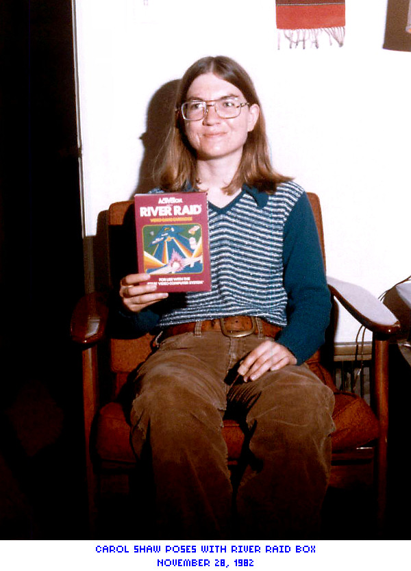
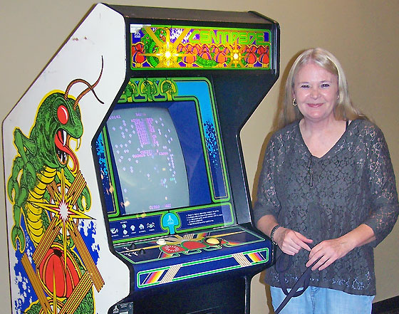
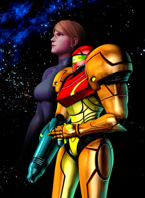

Developers
Carol Shaw
Typically credited as the first woman in video game design, Carol broke the ice for women in the video game industry. She made a name for herself working for Atari, under which she programmed and designed 3D Tic-Tac-Toe for the Atari 2600 in 1976. She's best known for her work at Activision, however, for the retro hit River Raid, released in 1982.
Roberta Williams

Not many people can be credited with creating an entire genre, but Roberta is one of those few who can be. After playing a text-only adventure game, Roberta decided it would be more engaging to combine it with a graphical interface: the graphical adventure game genre was born in 1980 with the release of Mystery House. In order to publish, she along with her husband founded the company On-Line Systems (which later became Sierra) in 1979.
Jane Jensen

Picking up where Roberta left off, Jane kept the adventure game genre alive with her high- quality writing and designing. She worked for Roberta in the 90s and eventually wrote and designed big hits like Kings Quest VI and the Gabriel Knight series, which set the standard for story-game design interaction in modern point-and-click adventure games.
Dona Bailey
Arriving at Atari just after Carol Shaw's departure, Dona Bailey was the only woman working in the company at the time. She's most famous for being the first woman to design an arcade game, the classic Centipede. The game was an instant success and today Dona encourages women to pursue careers in video game design.
Anne Westfall

An extremely influencial game designer in the 80s and accomplished programmer, Anne had already created the first microcomputer-based program to help structure subdivisions before she even touched game design. She and her husband founded Free Fall Associates in 1981, EA's very first independent developper contract. In fact, EA's biggest seller at the time became Archon, a game designed by her and her husband.
Gamers
Doris Self

Entering the 1983 Video Games Masters Tournament, Doris became one of the first competitive female gamers at age 58. She broke what was at the time the world high score record for Q*BERT with an impressive 1,112,300 points. Her score was beaten a few years later, but Doris became a presence in competitive gaming, and though she passed away in 2006, her legacy remains.
Characters
Princess Peach (1985) & Princess Zelda (1986)


Why put those two iconic characters together? Consider their origins as damsels in distress in Super Mario Bros and The Legend of Zelda, respectively. Consider their gradual growth from game to game, how their personalities and position as rulers have been expanded upon. Consider that they're often brought up in the same thought as Mario and Link. In many respects, Peach and Zelda's evolutions represent the evolution of how women have been represented in video games.
Samus Aran (1986)
In 1986, Nintendo surprised the world by revealing, at the end of their hit game Metroid that the protagonist, up until that point clad in a bulky and gender-ambiguous suit of armor, was a woman all along. This was a breakthrough: Samus was the second playable female character in video game history (preceeded by Kissy from Alien Sector, older by a year), and the first to achieve such wide popularity and have an entire franchise built around her.
Sonya Blade (1992)

A late addition by game developpers who thought that Mortal Kombat needed at least one female playable character, Sonya has become a staple of the Mortal Kombat series. As one of the original seven playable characters, Sonya has been featured in nearly all subsequent games in the series.
Lara Croft (1996)

A notorious character for various reasons - from her six Guiness World records, to her devoted fan following, to her successful film adaptation, and even to her status as a gaming sex symbol -, you can't talk about women in video games without talking about Lara Croft. Originally imagined as a male character with a hat and a whip, she was reimagined as a woman to avoid associations with Indiana Jones. She's now incredibly successful with a franchise that spans over a dozen games.